Gottfried Leibnitz discovered that the value of Pi could be calculated using and alternating infinite series.
or, a less scarily written version could be written as:
If we continue this pattern of adding and subtracting a fraction with an increasing denominator infinitely, it should reach pi/4.
Take Note of things we need to replicate in code:
- The series alternates adding and subtracting values.
- The denominator of the fraction being added is a repeating number pattern. It starts at one and increases by two each time.
We are going to simulate this series by performing one addition/subtraction each draw() cycle.
Open the Lebnitz Pi workspace on CodeHS
There you will find that a global variable pi has been created to represent our estimate, initialized to zero. The draw function is simply drawing that value to the screen using the text() function.
Our goal will be to modify the pi variable once each frame, either adding or subtracting a fraction value from it once each frame. The longer the program runs, the closer it will get to actual PI.
Before we get into the fraction portion, we should first focus on the alternating add and subtract. The first frame we want to add to the zero, next one subtract, then back to add again, etc.
One way we could tell when to add or subtract would be to look at the frameCount. We want to add when frameCount is 1, 3, 5, 7, etc. and subtract when frameCount is 2, 4, 6, 8. etc. Modify the draw function to add one to the pi variable when frameCount is odd and subtract one when it's even.
With this modification, running the program should show a value rapidly changing between 0 and 1. If you see a -1, your subtracting and adding are flipped.
To make this number generate pi, we need to add/subtract a fractional value each time. The most important part of the fraction to notice is the denominator follows a specific pattern. In the first frame it is 1, and then it increases by two each time.
- Add a global variable named den that is initialized to be 1 in the setup function. This will represent the denominator of our fraction.
- Find where you are adding/subtracting a one from pi, and modify it to use 1/den instead.
- Lastly, we need den to be larger every frame. After you've modified pi, increase den by 2. This will prepare it for the next frame.
With these steps completed, we are almost there. If you run your program, you should get a number that gradually tends toward 0.785....
The Leibnitz series doesn't calculate PI, it calculates PI/4 (0,785..). In order to get our value to generate PI, you should display a value that is four times as big as the sum (without actually changing the value of pi). You can do this by modifying the text() function call to display 4*pi.
Run your program and observe the program calculating. It will always be getting a little closer to PI, but never actually reach it. Over time you will see that more and more digits are 'locked into place'.
A Monte Carlo method is a computational strategy that uses randomness to show the probability of something that might not be easily calculated. We can use this type of strategy to derive an estimate for pi. Consider the situation where there is a square circumscribed around a circle.
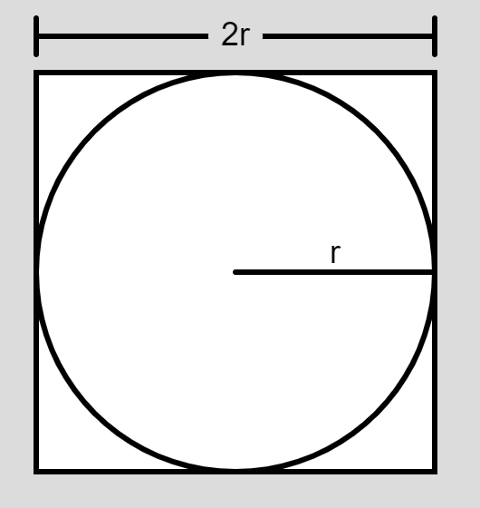
If you pick a random point inside the square, the chance that it will land inside the circle can be expressed as the proportion of their two areas. Notice that the square's side length is 2r, causing some cancellation occurs to simplify it down.
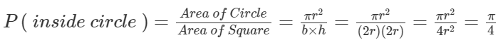
Probability says that we know what to expect the numbers to be:
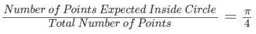
Monte Carlo methods are about simulation! We are going to write a sketch that will have a circle and a square. It will repeatedly choose a random point on the square
With each point, the simulation will keep count of how many of the random points end up in the circle. If we believe hard enough in probability, we can expect the percent of inside-points to be pi/4. With a little rearranging, we can use that information to 'solve for pi'
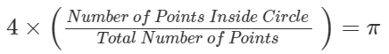
Open the Monte Carlo Pi Workspace
There is a lot of code already provided for you. Hit play and notice the basic layout. There is a 200x200 square circumscribing a circle, and three zero values are being written.
If you read the labels, those zeros all have a related global variable in the sketch: insideDots, totalsDots, piEstimate. The sketch is set up to display the value of these three variables, so that we can see their values increase as the simulation continues.
Find the simulateOneDot() function in the sketch. This is where you will be simulating adding a single random dot. You will not need a loop to get it to repeat. Since it is called every draw cycle, we will get many dots as time goes on.
Colored Dots: The first thing that you should do is choose a random location within the 200x200 square and draw a small circle at that location. When choosing the fill for the circle, use the dist() function to calculate how far the random point is from the circle's center at (100, 100). Compare that distance with the circle's radius of 100 to determine if it is inside the circle or not. Choose a different fill for the inside and outside points. Run your program to make sure that the dots fill the square and are colored properly.
Updating the Data: As you add your point, you also should be updating the three global variables. totalDots should always increase by one, but insideDots should only increase if the point was inside the circle. Lastly, you should update the piEstimate variable, which is determined using the previous equation: four times the ratio of the other two values.
Test your program and make sure that it gets within 0.05 of pi.
Adding one dot every frame is a little slow. You can speed it up by going to the draw() function and wrapping the call to simulateOneDot inside of a loop that will call it 20 times. This will make your program add 20 points every frame. This should allow you to get closer to pi much faster.
Archimedes' method for deriving Pi involves considering two regular polygons: one inscribed within the circle and one circumscribed outside of it.
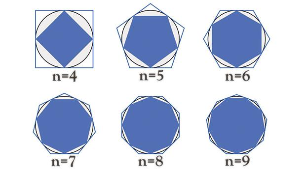
Archimedes stated that the perimeter of the inscribed polygon must be less than the circumference of the circle, while the circumscribed polygon's perimeter must be more. We can use this concept to show that pi must be between two values.
To demonstrate this effect, we are going to write a program that will draw a circle and two polygons with the same number of sides: one circumscribed and one inscribed. Each polygon's perimeter will be calculated and used to estimate what PI is.
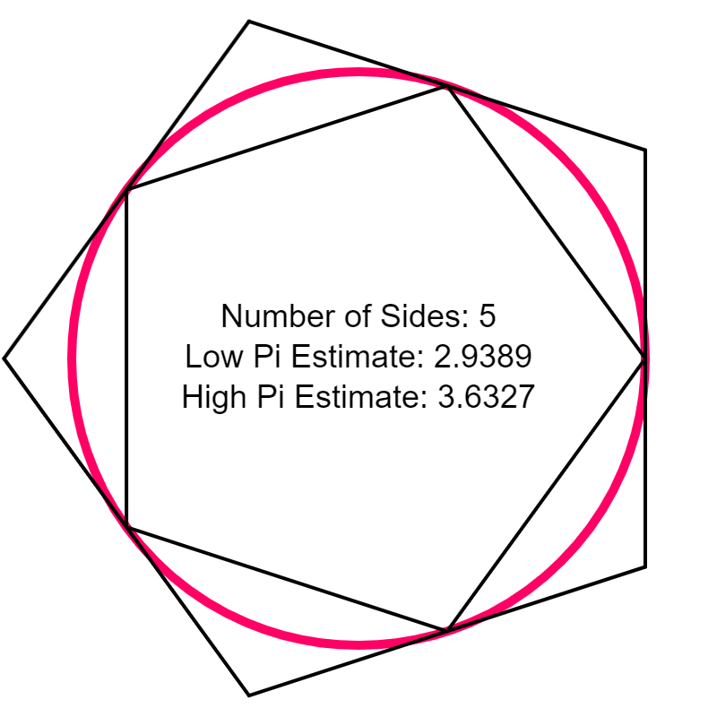
The smaller estimate will be less than PI, and the bigger estimate will be more. The user will then be able to modify the number of sides the polygon has. As the number of sides gets bigger, the two estimates should get closer and closer to PI.
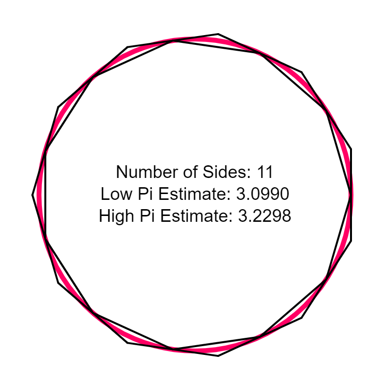
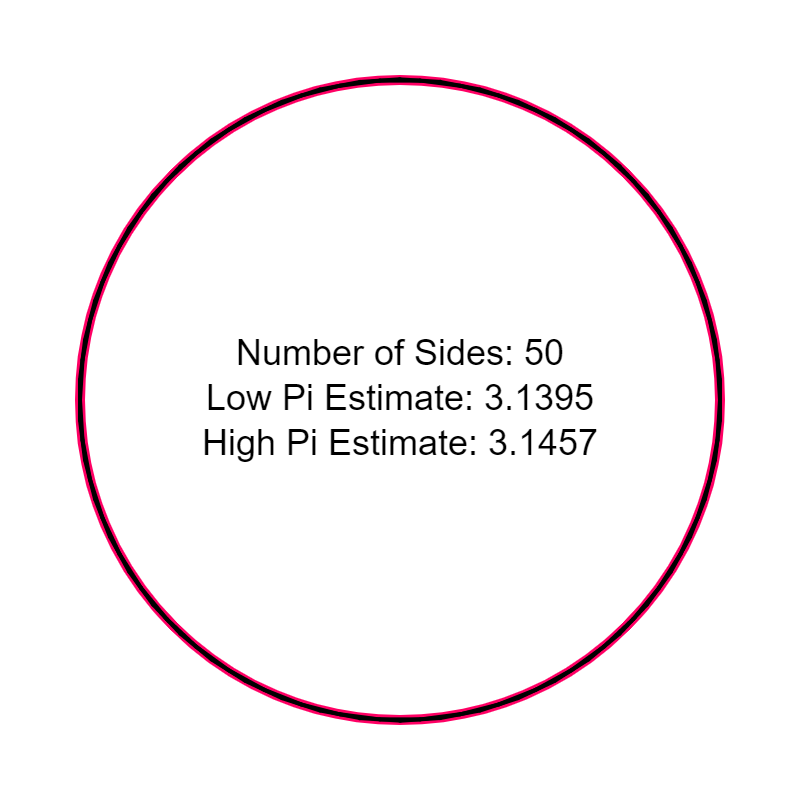
Pi must be between these two values. As the number of sides increases toward infinity,
There are many steps to take to do this. We will break it into steps:
1) Write a function to help draw two polygons
2) Write a function to help calculate their perimeters
3) Create estimates of pi based on those perimeters
Open the Archimedes Squeeze Workspace
The first thing we want to notice is that there is a global variable named numSides that is initialized to 5. We want to represent this as a variable so that we can change it later to see how our estimate changes as there are more sides to our polygon.
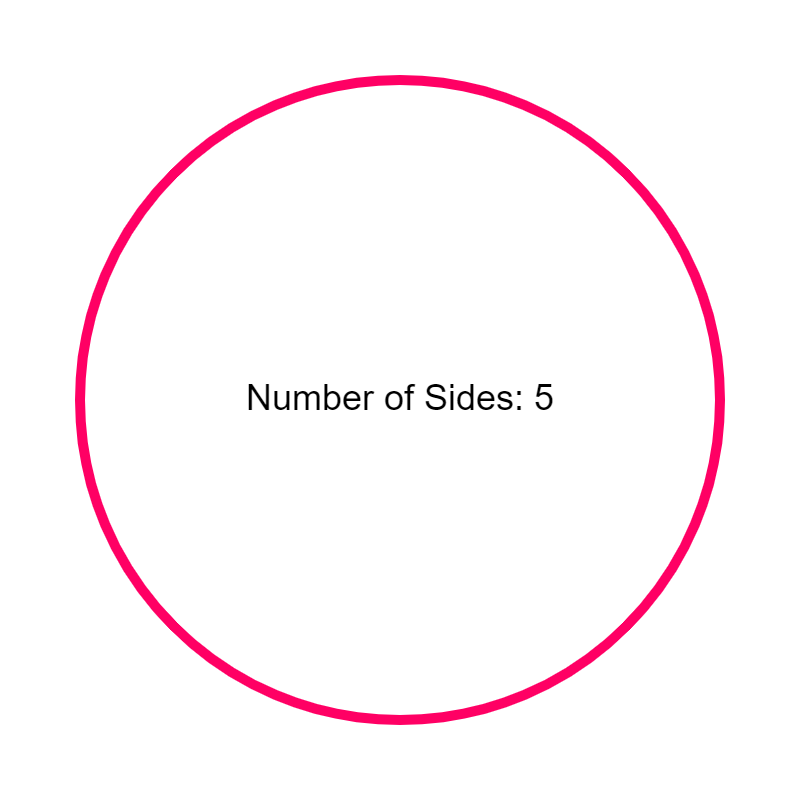
Notice that your sketch already has a keyPressed() function that is in charge of changing the numSides variable with the keyboard.
if( keyCode == UP_ARROW)
numSides++;
if( keyCode == DOWN_ARROW && numSides>3)
numSides--;
Don't forget that you have to click the canvas before it will listen to your keypresses. Run the sketch and make sure that you can change the number of sides up and down with your arrow keys.
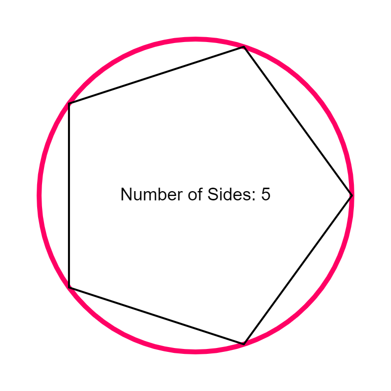
Find the drawPolygon() function. It is responsible for drawing a regular polygon, centered at (0,0), with a radius defined by the parameter radius. Right now the draw() function is calling the drawPolygon() function and giving it a radius that would make it perfectly inscribed within our circle. Our first goal is to get the above to show.
The key to drawing this is realizing that all vertices of a regular polygon fall on a circle, spaced out at regular intervals. This means that we can use our old friends, the trigonometric circle equations to get the x and y of any vertex.
let x = radius * cos( angle ); //radius is a parameter, angle is the unknown. let y = radius * sin( angle );
This time we are not going to worry about a centerX or centerY because the center is supposed to be (0,0). Since the radius is given to us, we only need to think of the angles of the points that we want to use.
In order to draw the sides of the polygon, we'll need two sets of (x,y) points to draw a line between. Since we're using the equations above, we'll need to think about two angles on the circles to connect. When talking about regular polygons, the central angle is how many degrees should separate each point.
For example, a regular pentagon has a 72 degree central angle.
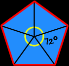
The first side of if could be drawn between the points at angles 0 and 72:
let x = radius * cos( 0 ); //radius is a parameter, angle is unknown. let y = radius * sin( 0 ); let x2 = radius * cos( 72 ); //radius is a parameter, angle is unknown. let y2 = radius * sin( 72 ); line(x, y, x2, y2);
The next line would be between 72 and 144, 144 and 216, etc.
Write a for loop that will help you draw all sides of the polygon by generating the angle for each vertex.
Not all polygons will be 72 degrees between points. It may be beneficial for you to calculate the central angle, which depends on the number of sides of the polygon.
let centralAngle = 360/numSides;
This will still calculate 72 for a pentagon shape, but for an octagon it would be 45.
The most common strategy is to have a looping variable representing the angle. It starts at 0, and increases by the centralAngle amount each time the loop iterates. Remember that consecutive vertices will be centralAngle apart, so the two points that you are drawing a line will be at angle and angle+centralAngle.
When you run, your polygon should have all of its points on the circle:
Use the arrow keys to increase or decrease the number of sides. Confirm that the correct polygon is always being drawn.
You may have noticed that there are two global radius variables: INSC_RADIUS, and CIRCUM_RADIUS. These represent the radii of the two polygons that we need for the inscribed and circumscribed polygons. The inscribed radius matches the circle but there is some provided calculations involved to get the circumscribed polygon's radius (CIRCUM_RADIUS = RAD/cos(180/numSides)
If you look at the bottom of the draw function, you will see two calls to drawPolygon(), one of them commented out
//Draw the inscribed polygon drawPolygon(INSC_RADIUS); //Draw the circumscribed polygon //drawPolygon(CIRCUM_RADIUS);
The second call uses the larger radius as the parameter. Uncomment it and you should now see a second polygon drawn around the circle.
Our end goal is to estimate PI by substituting the perimeter of our polygon for the circumference of our circle. Move to the perimeter() function in the sketch. This function is responsible for calculating and returning the perimeter of a polygon with a given radius. Currently the function doesn't have a return statement, and you may have already noticed that this causes it to say Inner Perimeter: undefined in the area under the circle.
The perimeter of a regular polygon is a simple formula:
Perimeter = Number of Sides X Side Length
Since we already know the number of sides (numSides), we only need to calculate the length of one side, which is just the distance between two consecutive vertices, which you can measure using the dist() function. You already have practice generating consecutive vertices from the drawPolygon() function. Calculate the centralAngle, and then use the trig formulas to generate two points that are one centralAngle apart. You will not need a loop this time, because you can find the distance between these two points and multiply it by the number of sides to get the complete perimeter.
Make sure that you return the result so that the sketch can insert that value into the output area.
After completing the perimeter() function, run your program and look at the calculated perimeters. When you first run it, you should now see the undefined value have disappeared:
Inner Perimeter: 940.4564036679569
Outer Perimeter: 1162.4680448085774
These are the correct perimeters when there are 5 sides to the polygon. As you add or remove sides, the values should update.
The reason that we calculate the perimeter of the two polygons is that they are both estimates of the circle's circumference. But in the end, our goal is not to estimate the circumference, but to estimate the value of pi.
The Circumference estimate is helpful because we know its relationship to pi using the formula:
\(Circumference\ =\ 2\times\pi\times radius\)
Like before, we're trying to derive pi so we will rewrite our equation to 'solve forpi':
\(\pi=\frac{circumference}{2\times radius}\)
Find the estimatePi() function, which also accepts a polygon radius as a parameter and expects us to return an estimate of PI. Following the process above, we need to:
- Estimate the circumference of the circle by calculating the polygon's perimeter.
- Divide it by (2*CIRCLE_RADIUS) to get an estimate of PI
- Return the result
This should be relatively simple because we have already done the majority of the work. Notice that you're already provided with the first step in the estimatePi() function. By calling the perimeter() function with our radius, we should be provided with a value that we can substitute for the circumference in our calculation. You simply have to divide and return the result.
The estimatePi() function is not naturally called during our program. Look towards the top of the draw() function where the center message is being created to include the number of sides.
let message = "Number of Sides: " + numSides // + "\nLow Pi Estimate: " + nf( estimatePi(INSC_RADIUS) ,0,4) // + "\nHigh Pi Estimate: " + nf( estimatePi(CIRCUM_RADIUS) ,0,4);
The two commented out lines are compacted, but they:
- Call the estimatePi() function with each radius
- Format the result to have only four places after the decimal
- Adds on to the end of the message
You should only have to comment these two lines out and run the sketch again to see your two pi estimates.